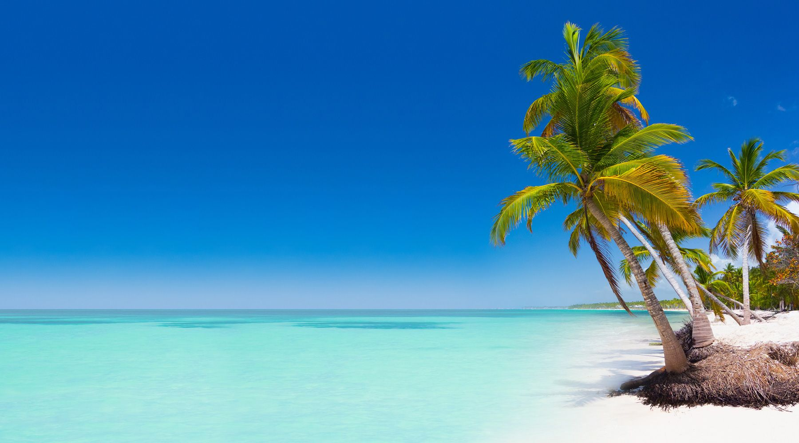
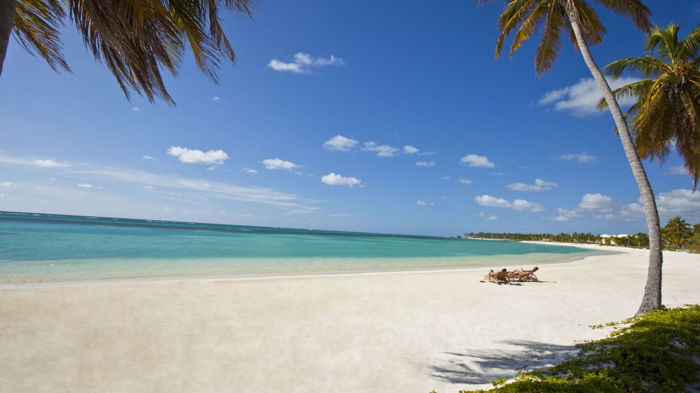
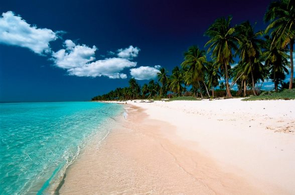
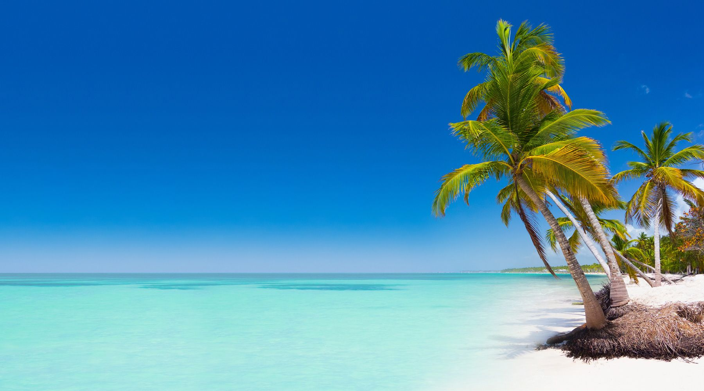
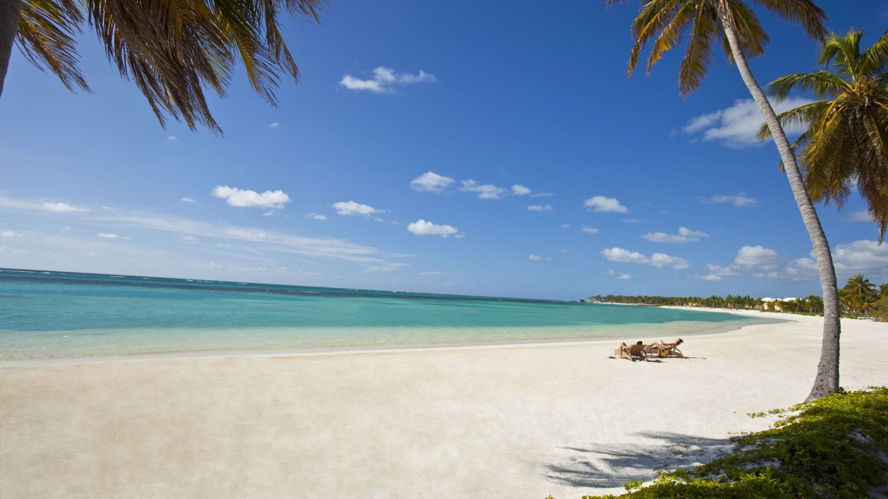
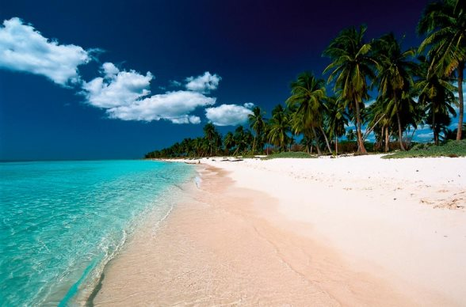

Principales Zonas Turísticas de Republica Dominicana
- + Punta Cana y Bavaro.
- + Boca Chica y Juan Dolio.
- + Santo Domingo y Ciudad Colonial.
- + La Romana, Bayahibe y Dominicus.
- + Samana y Las Terrenas.
- + Puerto Plata, Sosua y Cabarete
- + Entre otras
 






18 de Abril de 2018
Punta Cana es considerada uno de los mayores polos de atracción turística de la Republica Dominicana, ofrece alrededor de 50 Km. de playas, una infraestructura hotelera de excelencia, aeropuerto internacional, facilidades para todos los deportes, desde paseos en veleros hasta las bondades de algunas de las mejores canchas de golf del
Caribe y el placer de saborear deliciosos mariscos a la orilla del mar.
Queda en el extremo oriental de la isla, exactamente en el punto de confluencia entre el Atlántico y el Caribe. Adoptada desde hace años por el turismo de origen europeo, alberga a algunos de los resorts más renombrados del Caribe. Un reporte de la UNESCO reconoce las playas de Bavaro como las mejores del mundo y cuentan con más de 20 certificados Blue Flags. más
18 de Abril de 2018
Localidades costeras ubicadas en la parte Sureste de República Dominicana, Boca Chica 40 minutos, y Juan Dolio a 55 minutos de Santo Domingo, estos poblados tienen la particularidad de que poseen pequeñas plazas, restaurantes, locales nocturnos, casinos y hermosísimas playas de arena fina y blanca especialmente la playa de Boca Chica, están adaptadas para quienes deseen pasar un tiempo en el mar y disfrutar a la vez de la cercanía a la realidad de la vida dominicana. El Aeropuerto Internacional De Santo Domingo dista a escasos minutos de estas localidades. Juan Dolio cuenta con los campos de golf Metro Country Club y Guavaberry. Hay pocos hoteles como el Coral Costa Caribe, Emotions by Hodelpa y Embassy Suites, la playa es famosa por sus excelentes complejos de apartamentos frente a la playa de tranquilas aguas y arenas blancas.
Isaac Rosario Marrero, Matricula 16-MISN-6-036